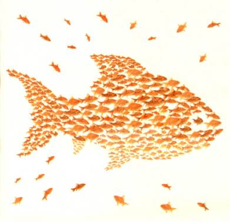

Responsabilidade Social nas Ciências da Informação

Universidade da Região de Joinville
Bacharelado em Engenharia de Software
Meio Ambiente, Sociedade e Tecnologia
Volmir Fontana
Everson Bittencourt
Geferson Eurico dos Santos
Vanderlei Sbaraini Amancio
Responsabilidade Social nas Ciências da Informação
Estimulando maior interação entre organizações e sociedade
Responsabilidade Social nas Ciências da Informação
Responsabilidade Social nas Ciências da Informação e o avanço tecnológico
Sociedade
Cultura
Política
Econômia
Responsabilidade Social nas Ciências da Informação
Aproximação de diferentes setores da sociedade
Aproximando interesses
Induzindo a coletividade
Somando esforços
